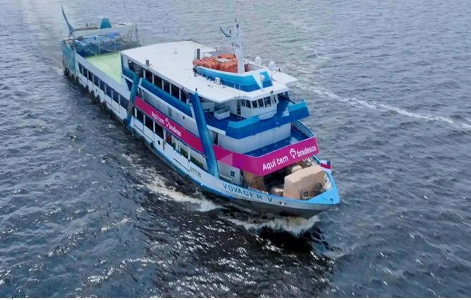

Inclusive, um dos nossos correspondentes é um barco. No meio do rio Amazonas.
Quando a gente fala de "produto financeiro B2B", é fácil imaginar planilha, dashboard, grande rede varejista. Mas o Bradesco Expresso é também o barco que navega até onde não existe agência, não existe sinal estável, não existe a opção de "vai resolver no banco da esquina"… até porque não há esquina. E é até esse lugar que o meu trabalho alcança.
Desenhar para o Expresso é desenhar para um país que a maioria dos produtos digitais nunca vê.
O Bradesco Expresso é uma rede de +41 mil correspondentes bancários — de pequenos comerciantes locais a grandes redes varejistas — que oferecem serviços financeiros em nome do banco. Hoje são 18 operações cadastradas entre produtos e serviços (consignado, abertura de conta, cartão, pagamentos e mais).
Com os bancos reduzindo a operação física, o correspondente virou peça-chave: absorve a demanda que a agência não comporta e, ao mesmo tempo, alcança regiões remotas onde muitas vezes ele é o único ponto de acesso a serviços bancários. Não é um canal de conveniência. Em boa parte do país, é o canal.
Fluxo macro da operação
Frontstage · a jornada do correspondente
Prospecção
é encontrado e cadastrado em campo
Implantação
o ponto é ativado e configurado
Treinamento
é certificado pra poder operar (exigência BACEN)
Operação
atende e vende no dia a dia (contínuo), também tem sua própria gestão financeira
Backstage · operação interna (back-office)
Análise
dados, fotos, elegibilidade
Aprovação
aprovar · reprovar · escalar
Ativação e suporte
repasses e comissões do correspondente; fluxo de caixa
Controle da plataforma
motor de comunicação, CRUD, gestão de acessos e parâmetros
Gestão financeira
repasses, comissões e fluxo de caixa do correspondente
Cada transação tem um time específico por trás
negociação e acompanhamento das necessidades de cada produto para o canal
Comecei no Expresso como UX Writer e fiz a transição para Product Designer dentro do próprio produto. No começo, tive uma atuação cross; nosso desafio era de fundação: modernizar a plataforma, digitalizar processos analógicos, criar jornadas que não existiam — e isso exigia mais mobilidade entre os membros do time. Então eu consegui passear por todo o guarda-chuva do Expresso.
De UX Writer a Product Designer
UX Writer
· Atuação cross
Product Designer
· hoje: atuação B2B/backoffice
Hoje, minha atuação é focada em B2B e backoffice, e a minha responsabilidade principal é conduzir a evolução da jornada de prospecção — com 5 atores, 3 plataformas diretas e a transformação digital de um processo legado.
Trabalhar no Expresso, e no Bradesco de forma geral, é desenhar dentro das regras do BACEN — e isso molda decisões concretas de design, que vão de um ajuste pequeno, como a inclusão de um QR Code obrigatório num produto, à certificação exigida para o correspondente operar, o que gerou a necessidade de uma área inteira na plataforma.
E quando começamos a trabalhar na plataforma, ainda não existia o cenário acelerado de IA que temos agora, então toda a estratégia de conteúdo e design foi feita artesanalmente pensando nas regras de regulamentação e, principalmente, em evitar ambiguidades — que, nesse tipo de produto, deixam de ser um atrito na experiência do usuário para virar risco regulatório. Clareza no Expresso é uma decisão de conformidade, não só de UX.
Ter rodado por todos esses produtos financeiros do mesmo ecossistema foi um verdadeiro exercício de design e me ensinou que, para esse público, a consistência entre jornadas é o que torna o sistema aprendível. A jornada de consignado precisa trazer a mesma familiaridade da de abertura de conta. Se cada produto reensina o sistema do zero, o correspondente trava — e o custo disso é gigante pra confiança na plataforma das duas pontas: o correspondente e o nosso cliente final que ele está atendendo.
Agência vs. Correspondente
Se o cliente ou o sistema travam, tem um suporte imediato lado a lado para resolver qualquer dúvida ou problema.
rede de apoioSe a minha interface falha, o correspondente fica com cara de tacho na frente de quem confiou nele, e a frustração entra na conta dele. E na nossa.
Sozinho com o clienteE ter vindo do UX Writing me deu uma lente que uso o tempo todo: num produto em que o texto guia um usuário que está sozinho na frente do cliente dele, a palavra é a interface. Hierarquia de informação e linguagem simples deixam de ser detalhes e viram parte fundamental da estrutura.
Projetar para a acessibilidade resulta em um design melhor pra todos
O nosso foco é criar jornadas acessíveis que possam funcionar para todos os atores do nosso ecossistema, com vários perfis diferentes de letramento digital e escolaridade. Acessibilidade é para todo mundo. Quando eu reduzo carga cognitiva e tiro ambiguidade, eu não estou "simplificando para o público de baixo letramento digital"; eu estou criando uma jornada que funciona para qualquer um. Uma boa plataforma guia qualquer perfil pela interface.
Correspondentes e gerentes falam sobre o impacto do Expresso nas comunidades onde operam.
▶No bananal agora tem agência do Bradesco Expresso ▶Uma parceria Gazin e Bradesco ▶Amigo Cliente no Supermercado Sita 📂 APROFUNDE NOS SUB-CASES 📁 Prospecção_PCO — design sistêmico completoABRIR ▸ 📁 Treinamentos — R$200K economiaABRIR ▸ 📁 Design_Ops — Single Source of TruthABRIR ▸